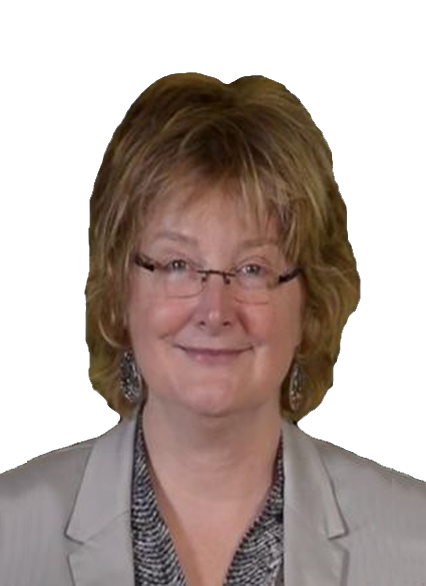
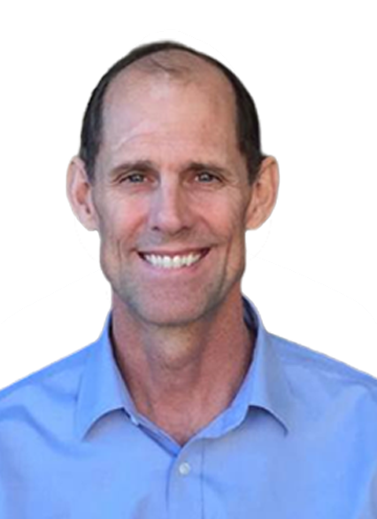

GeoMundus 2020
KEYNOTE SPEAKERS
We are happy to introduce our first two key note speakers, Prof. Dr. Paula Moraga and Dr. Gerald Blasch. Please visit their personal websites to find out more about them. Remaining keynote speakers for GeoMundus 2020 will be announced soon! Stay tuned for more information.
Prof. Dr. Paula Moraga
Prof. Dr. Paula Moraga is an Assistant Professor of Statistics at the King Abdullah University of Science and Technology (KAUST)
and the Principal Investigator of the Geospatial Statistics and Health Surveillance Research Group. Paula received her Bachelor's degree in Mathematics and her Ph.D. degree in Statistics from the University of Valencia,
and her Master's degree in Biostatistics from Harvard University. Prior to joining KAUST, she held academic positions at the University of Bath, Lancaster University, Queensland University of Technology, London
School of Hygiene and Tropical Medicine, and Harvard School of Public Health.
services.
Paula's research focuses on the development of innovative statistical methods and computational tools for geospatial data analysis
and health surveillance and has directly informed strategic policy in reducing disease burden in several countries. Her projects
include the development of modeling architectures to understand the spatio-temporal patterns and identify targets for intervention
of malaria in Africa, leptospirosis in Brazil, and cancer in Australia. Paula has also worked on the development of a number of
R packages for Bayesian risk modeling, detection of disease clusters, and risk assessment of travel-related spread of disease, and
is the author of Spatial EpiApp, a Shiny web application for the analysis of spatial and spatio-temporal disease data. Paula has
published extensively in leading journals and is the author of the book 'Geospatial Health Data: Modeling and Visualization with
R-INLA and Shiny' (2019, Chapman & Hall/CRC).
KEYNOTE (working title): “Geospatial Data Science for Public Health Surveillance”
Geospatial health data are essential to inform public health and policy. These data can be used to quantify disease burden, understand geographic and temporal patterns, identify risk factors, and measure inequalities. In this talk, Paula will give an overview of her research which focuses on the development of innovative statistical methods and interactive visualization applications for geospatial data analysis and health surveillance.

Dr. Gerald Blasch
Dr. Gerald Blasch Gerald Blasch is a Crop
Disease Geo-Spatial Data Scientist at the International Maize and Wheat Improvement Center (CIMMYT). His work focuses on R4D of remote sensing (RS)
and geospatial solutions for large-scale crop disease early warning systems, whereby he explores the potential of UAV-based high-throughput
phenotyping for biotic stresses and satellite-based crop disease detection.
Overall, Gerald has 13 years of research and consultancy experience
in (inter)national projects in the agriculture and development sectors of several countries (e.g. Australia, China, Ethiopia, Germany, Mexico,
and the UK). As a researcher, he developed RS and GIS tools for precision and conservation agriculture, digital soil mapping, and environmental
monitoring during his Post-Doc (Newcastle University, UK) and Ph.D. studies (GFZ German Research Centre for Geosciences, Germany), and consultancy
activities (CIMMYT, Mexico). For instance, to optimize farm management, Gerald developed an easy-to-use tool for deriving yield zones in crop
production system by applying Spatio-temporal analysis to large yield map time series using image analysis techniques such as pattern recognition
and unsupervised learning. As a GIS expert (GIZ German agency of international cooperation, Germany; SEMARNAT, Mexico) he built and managed a GIS
for waste management for the Mexican Federal Ministry of Environment and Natural Resources (SEMARNAT).
KEYNOTE (working title): “Wheat Rust Early Warning System in Ethiopia – Using New Technologies to Combat Crop Disease”
Wheat rusts pose a major threat to food security in Ethiopia, with several devastating epidemics in recent history. To help prevent major disease outbreaks, early detection and timely control are essential. In response to the wheat rust problem in Ethiopia, a consortium of national and international partners have created one of the most advanced, operational crop disease early warning and advisory systems in the world. This early warning system includes several advanced technologies and operates in near real-time within the wheat season. Key elements include near real-time field and mobile phone surveillance data, mobile nanopore sequencing diagnostics, meteorologically-driven spore dispersal, disease environmental suitability forecasting, and a platform for timely communication to policy-makers, extension agents and small-holder farmers. This keynote talk describes the existing early warning system and the planned development of additional, new components for enhancement based on artificial intelligence, machine learning, and remote sensing, such as UAV-based high throughput phenotyping for biotic stresses. surveillance.
PAST CONFERENCES
2019
Prof. Dr. Thomas Brinkhoff
See more
2019
Rohini S. Swaminathan
See more
2019
Tim Sutton
See more
2019
Laura Diaz
See more
2018
Michael Frank Goodchild
See more (2018,
2011)
2018
Monica Wachowicz
See more
2017
Dr. Torsten Prinz
See more
2016
Alan Murray
See more
2015
Daniele Quercia
See more